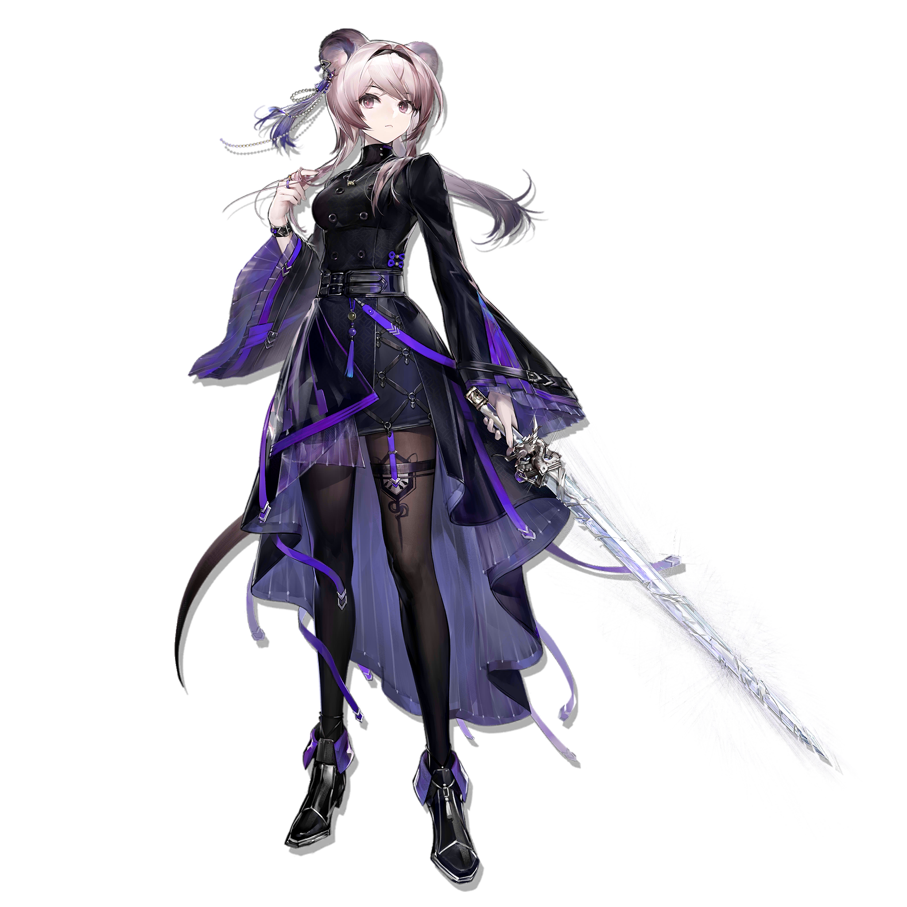

My waifu is Lin, a cute girl
She also has animal-like features, such as rounded ears and a long tail, which give her a catlike or beast-folk look. The flower ornaments, beads, and tassels make her outfit feel delicate despite the dark colors. Her pose is composed and confident, as if she is ready for battle but not rushing into it.
Here is the source of the image